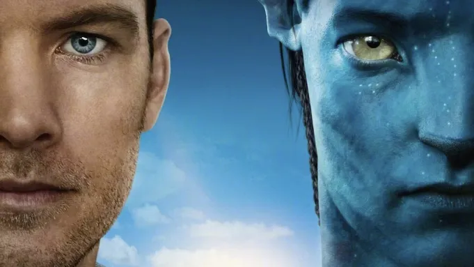

Топ 5! Підбірка фантастичні фільми:
-
Аватар
«Авата́р» (англ. Avatar) — американський науково-фантастичний фільм 2009 року сценариста і режисера Джеймса Кемерона з Семом Вортінгтоном і Зої Салданою в головних ролях. Дія фільму відбувається у 2154 році, коли людство видобуває цінний мінерал анобта́ніум на Пандорі, населеному супутнику газової планети в зоряній системі Альфа Центавра. За сюжетом ресурсодобувна корпорація загрожує існуванню місцевого племені людиноподібних розумних істот—на'ві. Назва фільму — це назва генетично спроєктованих тіл гібридів на'ві та людей, які використовуються командою дослідників для вивчення планети та взаємодії з тубільними мешканцями Пандори.
Цікаві факти про фільм
- "Аватар" став найбільш збірним фільмом усіх часів на момент його виходу. Він приніс понад 2,7 мільярда доларів прибутку у всьому світі.
- Робота над "Аватаром" тривала близько десяти років, включаючи розробку технологій, написання сценарію та постпродакшн.
- Фільм "Аватар" використовував революційні технології для створення 3D-зображень та реалістичних цифрових персонажів. Ця технологія значно вплинула на розвиток кінематографу.
-
Першому гравцю приготуватися
«Першому гравцю приготуватися» — американський науково-фантастичний пригодницький фільм, знятий Стівеном Спілбергом за однойменним романом Ернеста Клайна.
За сюжетом, у 2045 році глобальна економічна кризи довела Америку до такого стану, що більшість жителів тікає від суворої реальності в глобальну відеогру OASIS, битком набиту різноманітними квестами та відсиланнями до поп-культури минулих десятиліть.Цікаві факти про фільм
- Спеціальні ефекти: Фільм виділяється за вражаючими спеціальними ефектами та візуальними декораціями, особливо в сценах, де головні герої занурюються у світ ОАСІС.
- Музика: Саундтрек до фільму містить композиції від відомих виконавців 1980-х, таких як Ван Гелен і Томас Долбі.
- Вірність книзі: Хоча фільм має деякі відмінності від оригінальної книги, він залишив центральну ідею гонки за "Яйцем" та вірність дусі культури 1980-х.
На початок ↑
-
Інтерстеллар

"Інтерстеллар" - це науково-фантастичний фільм, випущений у 2014 році та режисований Крістофером Ноланом. Фільм став однією з найвідоміших і популярних наукових фантастиків 2010-х років.Нолан зв'язав свої ідеї з існуючим сценарієм, написаним його братом Джонатаном Ноланом, який розроблявся у 2007 році для студії Paramount Pictures.
Цікаві факти про фільм
- Наукові консультанти: Фільм мав наукових консультантів, включаючи фізика Кіпа Торна, який спеціалізується на теорії відносності Альберта Ейнштейна. Це допомогло створити вірну наукову основу для багатьох аспектів сюжету.
- Основано на наукових концепціях: "Інтерстеллар" висвітлює такі наукові концепції, як релятивістська фізика, часові дилатації, червоний зсув та теорія струн. Фільм намагається представити ці складні концепції у доступному форматі.
- Фільм був знятий на різних локаціях, включаючи Канаду та Ісландію, щоб створити візуально вражаючі пейзажі планет.
На початок ↑
-
Області темряви
«Області темряви» (англ. Limitless, дослівно укр. Безмежний, також відомий як Безмежний розум: Області пітьми) — американський науково-фантастичний трилер режисера Ніла Берґера, що вийшов 2011 року. Стрічку знято на основі роману Алана Ґлінна. За мотивами фільму знято однойменний серіал.
Цікаві факти про фільм
- Головну роль Едді Морра виконав Брадлі Купер, який здійснив вражаючий акторський перформанс у фільмі. Ця роль дозволила Куперу продемонструвати свої акторські навички і різноманітність.
- Адаптація роману: Фільм "Limitless" базується на романі Алана Глайна "The Dark Fields". Сюжет фільму відділяється від оригінального роману, але обидва розглядають ефекти вживання препарату, який розбуджує підвищену інтелектуальну активність.
- Серіал-спін-офф: У 2015 році був створений телевізійний серіал "Limitless", який є спін-оффом фільму. Серіал розглядає події, що відбуваються після подій фільму та використовує схожий концепт ноотропного препарату.
На початок ↑
-
Загадкова історія Бенджаміна Баттона
«Загадкова історія Бенджаміна Баттона» (англ. The Curious Case of Benjamin Button) — фільм Девіда Фінчера, прем'єра якого відбулася 25 грудня 2008 в США, знятий за однойменним оповіданням Френсіса Скотта Фіцджеральда.
Оскільки розповідь була короткою, сценарист Ерік Рот перетворив її «на 200-сторінковий сценарій, який описує 80 років життя цієї незвичайної людини».Цікаві факти про фільм
- Фільм отримав "Оскар" за кращі візуальні ефекти. Він використовував передові технології для створення ефекту зворотного старіння персонажа Бенджаміна.
- Фільм відзначається вражаючим акторським складом. Головну роль Бенджаміна Баттона виконав Бред Пітт, а Кейт Бланшет зіграла роль Дейзі. Обидва актори були номіновані на "Оскар" за свої виступи.
- Роман Френсіса Скотта Фіцджеральда, на якому базується фільм, вже був адаптований у 1922 році для короткометражного фільму і раніше залишався неопублікованим.